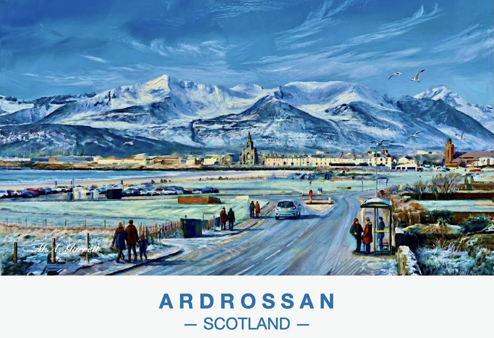

Ardrossan, Arran in Snow
A frosty winter morning in Ardrossan with the snow-covered mountains of the Isle of Arran rising across the water behind the town.
Paintings of the Ayrshire coast

A frosty winter morning in Ardrossan with the snow-covered mountains of the Isle of Arran rising across the water behind the town.